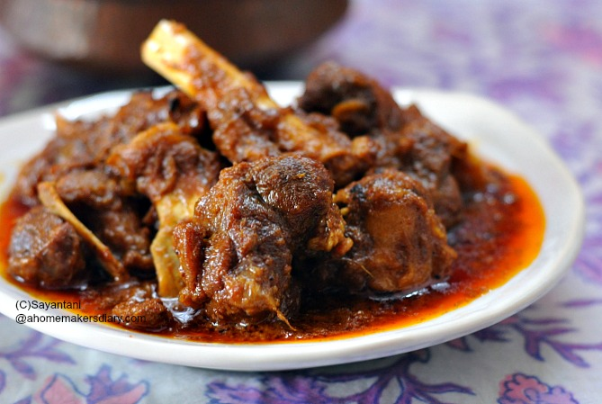

Back to home
Mutton Kasha

Mutton Kosha (Kosha Mangsho) is a classic Bengali slow-cooked mutton curry. The dish, whose name means "braised mutton," is renowned for its deep, spicy, oil-separating gravy and tender meat. Traditionally enjoyed at celebrations, it’s slow-cooked to develop complex flavors, often served with rice, luchi, or paratha.
Ingredients:
- 1 kg mutton (bone-in pieces)
- 3/4 tsp turmeric powder
- 2 tbsp Kashmiri chili powder
- 2 tbsp coriander powder
- 1.5 tsp cumin powder
- 2 tbsp ginger-garlic-green chili paste
- 1/2 cup mustard oil
- 2 bay leaves
- 6 onions, sliced
- 2 tsp sugar
- 1/2 cup yogurt, whisked
- 1 tbsp garam masala
- 7-8 green chilies, slit
- Fresh coriander for garnish
- Salt to taste
Instructions:
- Marinate mutton with half the spices, ginger-garlic-green chili paste, salt, and yogurt for 1-2 hours.
- Heat mustard oil in a heavy pan; add bay leaves. Add onions, sauté until deep golden.
- Add sugar, the rest of the ginger and garlic paste; cook till oil separates.
- Add remaining powdered spices; sauté 1-2 minutes.
- Add marinated mutton with any marinade liquid. Sear over high heat for 10-15 minutes, stirring to prevent sticking.
- Reduce heat; slow-cook covered, stirring every 5-10 minutes, for 1-1.5 hours, adding a splash of hot water if needed, until meat is soft but not falling apart.
- Finish with garam masala, green chilies, and fresh coriander. Rest 5 minutes before serving.